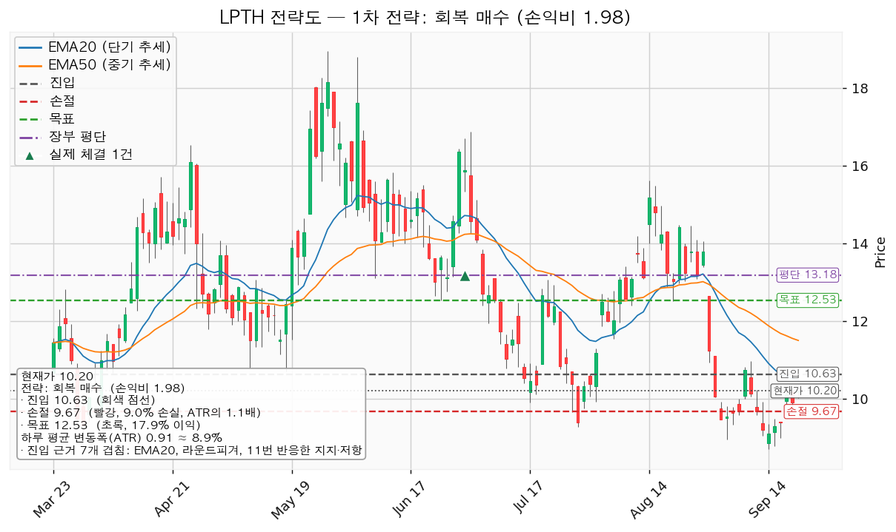
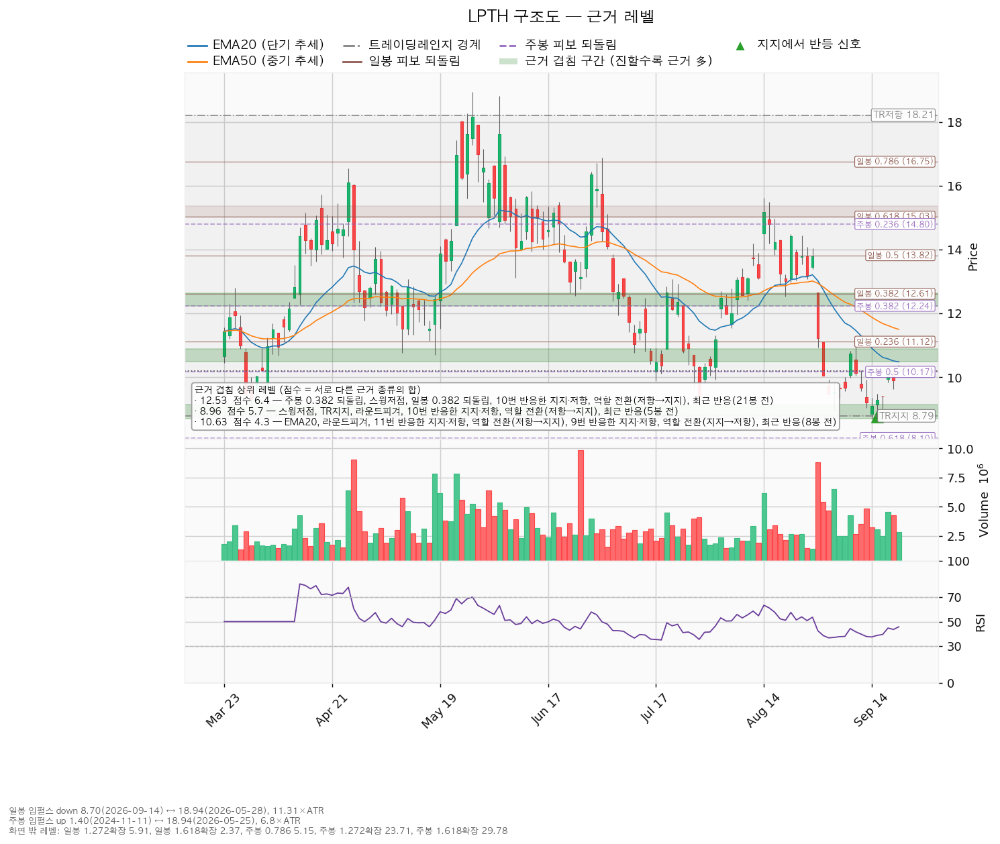
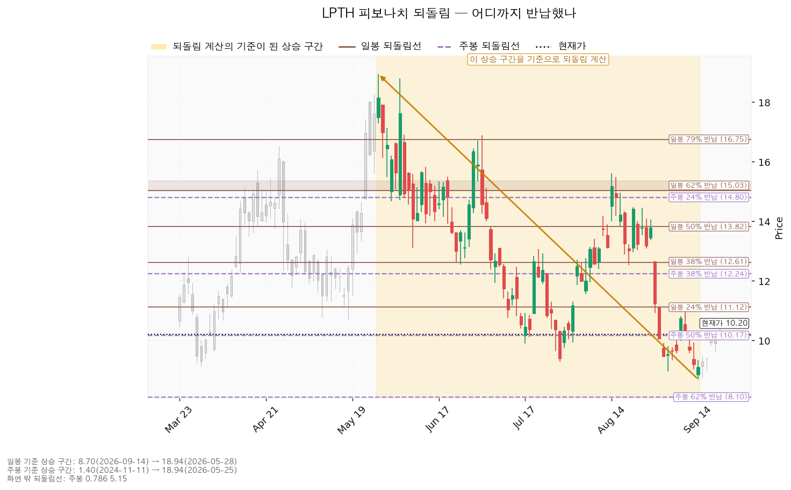
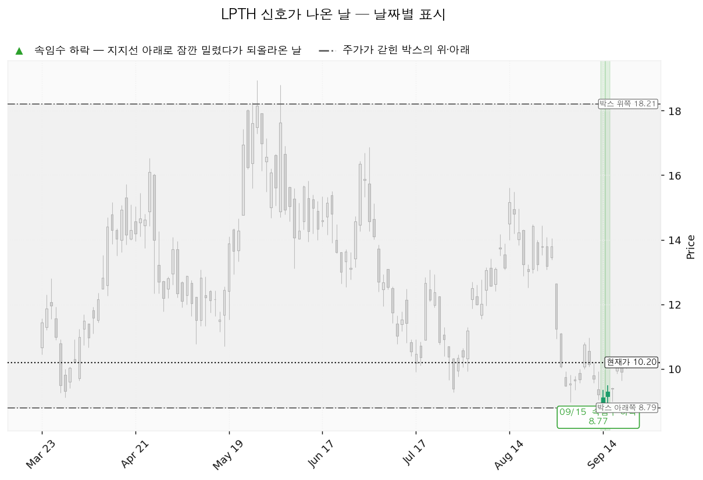

라이트패스 테크놀로지스(LPTH)는 열화상 카메라와 산업용 계측기에 들어가는 적외선 광학 렌즈·광학 조립체를 만드는 미국 기업입니다.
현재가 10.20달러(2026-09-21 종가), 하루 평균 변동폭(ATR) 0.9058달러 기준입니다.
| 구분 | 가격 | 판정 방식 | 현재가 대비 | 상태 |
|---|---|---|---|---|
| 회복선(진입 조건) | 10.63달러 | 일봉 종가로 회복한 뒤 되돌림에서 지지되는지 | +4.2% (하루 평균 변동폭의 0.47배) | 회복 대기 |
| 집행 손절 | 9.67달러 | 장중 저가 터치 시 집행 | -5.2% | 10.63달러에 새로 진입한 경우에만 유효합니다. 보유 200주에는 적용되지 않습니다 |
| 관망 종료 기준 | 9.90달러 / 날짜 조건 2026-11-13 | 일봉 종가가 9.90달러(아래쪽 겹침 구간 9.90~10.17달러의 바닥) 아래로 마감하면 이 리포트의 매수 계획이 끝납니다 — 새 리포트 대기, 보유 200주는 유지. 날짜 조건은 다음 실적일입니다 | -2.9% (하루 평균 변동폭의 0.33배) | 유지 중 |
| 확인선 | 12.53달러 | 일봉 종가 돌파 후 되돌림에서 지지되는지 | +22.8% (하루 평균 변동폭의 2.57배) | 미돌파 |
| 폐기선(구조) | 8.79달러 | 종가 이탈 후 3거래일 내 회복 실패(또는 그 전에 7.89달러 아래 종가 마감) + 반등에서 저항으로 확인 | -13.8% (하루 평균 변동폭의 1.56배) | 유지 중 |
① 회복선 10.04달러는 9월 17일 종가 10.11달러로 충족됐습니다. 그 뒤 목표 12.51달러와 손절 8.76달러 어디에도 닿지 않았고(구간 최고가 10.38, 최저가 9.63), 1차 목표 10.74달러도 미도달입니다. 관망 종료 9.00달러·폐기선 8.93달러는 구간 최저 종가가 9.90달러여서 미충족입니다. 진입 조건이 충족된 9월 17일 이후 장부에 LPTH 매수 기록이 없습니다. 장부에 남은 것은 7월 1일 200주(평단 13.1821달러)뿐이므로, 계획은 성립했으나 집행되지 않았습니다. 이 리포트는 그 진입을 이미 한 것으로 가정하지 않고 지금 가격에서 다시 잡습니다.
② 좌표의 이동. 회복선 10.04 → 10.63달러로 올랐습니다 — 가격이 10.04달러 위로 올라와 그 구간을 지나쳤고, 위쪽 겹침 1순위가 10.48~10.90달러 구간(4.3점)으로 바뀌었습니다. 집행 손절 8.76 → 9.67달러, 관망 종료 9.00 → 9.90달러 — 진입 아래 겹침 구간이 9.00~9.28달러에서 9.90~10.17달러로 올라간 만큼 함께 올라왔습니다. 확인선·목표 12.51 → 12.53달러 — 일봉 되돌림 기준 저점이 8.96달러(9/2)에서 8.70달러(9/14)로 바뀌며 일봉 0.382 되돌림이 12.77 → 12.61달러로 내려와 그 구간에 합류했고 점수가 5.4 → 6.4점으로 올랐습니다. 폐기선 8.93 → 8.79달러 — 9월 14일 저가 8.70달러가 반영되며 180봉 박스 하단이 재계산됐습니다. 손익비 1:1.94 → 1:1.98, 손절 폭 1.33 → 1.06 ATR, 하루 평균 변동폭 0.9649 → 0.9058달러입니다.
③ 판단은 같고, 한 가지를 정정합니다. 보유 유지 + 회복선 종가 회복 시에만 신규 매수라는 결론은 직전과 같습니다. 정정할 것은 상승 여력 분해입니다 — 직전 리포트는 목표 15.80달러를 선행 주당순이익 0.11달러로만 나눠 "배수 확장에 의존"이라고 적었는데, 내년 컨센서스 +0.16달러로 나누면 98.8배로 현재 92.7배와 가깝습니다(아래 컨센서스 절).
성립하는 셋업은 reclaim_long(회복 후 롱 전환) 하나입니다. 유효 박스가 있지만 박스 안쪽 판정이 매집 우위가 아니라 중립이어서 지지 확인 매수는 산출되지 않았고, 추세가 하락이라 되돌림 저가매수도 나오지 않았습니다.
| 항목 | 내용 |
|---|---|
| 이름 / 방향 | reclaim_long / 롱 |
| 진입 | 10.63달러 — 일봉 종가로 회복한 뒤 |
| 진입 근거 (겹침 4.3점) | 20일 지수이동평균 + 라운드피겨 + 11번 반응한 지지·저항 + 역할 전환(저항→지지) + 9번 반응한 지지·저항 + 역할 전환(지지→저항) + 최근 반응(8봉 전) / 구간 10.48~10.90달러 |
| 손절 | 9.67달러 (진입 대비 -9.03%, 하루 평균 변동폭의 1.06배) |
| 손절 근거 | 근거 겹침 구간(9.90~10.17달러, 3.9점) 바로 아래에 두었습니다. 구간 안쪽이 아니라 아래에 둔 만큼 손절 폭이 넓어졌고 그만큼 손익비가 낮아졌습니다 |
| 목표 | 12.53달러 (진입 대비 +17.9%) |
| 목표 근거 (겹침 6.4점) | 주봉 0.382 되돌림 + 일봉 0.382 되돌림 + 스윙저점 + 10번 반응한 지지·저항 + 역할 전환(저항→지지) + 최근 반응(21봉 전) / 구간 12.24~12.635달러 |
| 손익비 | `1:1.98` (손절 폭 1.06 ATR). 구조적 손절 기준 손익비도 같은 `1:1.98`입니다 — 9.67달러가 이미 겹침 구간 아래에 둔 구조적 손절이므로, 손절을 하루 변동폭 안으로 조여서 얻은 손익비가 아닙니다 |
| 구조 증명도 | 회복 확인형(가중치 1.0) — 저항을 종가로 되찾은 뒤에만 들어가므로 진입가는 불리하지만 구조가 먼저 증명됩니다 |
| 엣지의 종류 | 모멘텀 — "저항을 종가로 되찾으면 그 방향이 이어진다"는 전제입니다. 자주 틀리고 소수가 크게 맞는 유형이며 승률을 기대하는 셋업이 아닙니다(이 유형의 일반적 성격이며 이 엔진에서 측정한 값이 아닙니다) |
| 청산 | 12.53달러에서 전량입니다. 트레일링은 걸지 않습니다 |
대표로 고른 이유: 손익비 1.98 × 구조 증명도(회복 확인형) × 근거 겹침 4.3점입니다. 상대강도와 거래량으로 순위에 0.80배가 곱해졌습니다(지수 대비 20일 초과수익 -30.44%, 상대강도선 20일 기울기 -30.09%, 돌파 구간인데 거래량이 20일 평균의 최대 1.23배). 산출된 셋업이 하나뿐이라 이 배수로 순서가 바뀌지는 않았고, 손익비가 1을 넘으므로 보류 대상도 아닙니다.
모멘텀 전제에 고정 목표를 붙인 점: 진입 근거는 모멘텀이지만 집행은 박스 규칙을 따릅니다 — 손절은 구조 아래에 두고 12.53달러에서 전량 청산하며 트레일링은 걸지 않습니다. 12.53달러 위 구간은 이 포지션의 연장이 아니라 새 셋업으로 다시 잡습니다.
분할하지 않는 이유: 1차 목표 11.03달러에서 50%를 팔고 잔여분 손절을 진입가 10.63달러로 올리는 안도 함께 산출됐습니다. 1차 청산의 손익비가 0.41에 그쳐 전 구간을 합친 손익비가 1.98에서 1.20으로 내려가고, 1차 청산 뒤 본전 손절에 걸리면 0.20까지 떨어집니다. `1:1.98`은 12.53달러 전량 청산에서만 성립하므로 전량 청산 하나만 계획으로 냅니다. 진입 10.63달러는 보유 평단 13.1821달러보다 아래이므로, 이 매수가 성립하면 평단을 낮추는 매수가 됩니다. 현재가 추격은 하지 않습니다 — 진입 10.63달러가 현재가 10.20달러보다 +4.2% 위에 있고, 아직 종가로 회복하지 못했습니다. 되돌림을 기다린다면 대기 좌표는 9.39달러 구간(9.28~9.50달러, 2.3점 — 스윙저점 + 라운드피겨 + 최근 반응 12봉 전)입니다. 이동평균은 현재가 10.20달러가 5거래일 유지될 경우 20일선 10.48 → 10.37달러, 50일선 11.50 → 11.26달러로 내려옵니다 — 이 투영치는 가격 예측이 아니라 이평선 자체의 위치입니다.

기준선은 셋업 진입가 10.63달러이며, 시나리오 폐기선 8.79달러와는 다른 가격입니다.
| 단계 | 트리거 | 의미 | 행동 |
|---|---|---|---|
| ① 관찰 | 일봉 종가가 10.63달러 아래로 마감 | 구조 이탈의 시작일 뿐 무효가 아닙니다. 되돌아 올라오면 속임수 하락일 수 있습니다 | 신규 진입만 중단하고 집행 손절은 그대로 둡니다 |
| ② 경고 | 이탈 후 3거래일 안에 10.63달러를 종가로 회복하지 못하거나, 그 전에 일봉 종가가 9.72달러 아래로 마감 — 둘 중 먼저 오는 쪽 | 저항 회복 실패 가능성이 우세해집니다 | 잔여 비중 축소. 반등이 나오면 이 가격에서의 반응을 확인합니다 |
| ③ 무효 | 반등이 10.63달러에서 막히고 그 아래로 되밀림(지지가 저항으로 전환) | 셋업 폐기 — 구조 해석이 틀린 것으로 확정 | 포지션 정리 후 새 구조가 만들어질 때까지 관망 |
집행 손절 9.67달러는 이 3단계와 무관하게 별도로 작동하며, 장중 일시 이탈은 어느 단계에도 해당하지 않습니다. 폐기선 8.79달러는 종가로 이탈된 적이 없어 어느 단계에도 들어가 있지 않습니다. 논지 무효화(가격과 별개): 폐기선 8.79달러는 현재가에서 하루 평균 변동폭의 1.56배 거리라 실무적으로 작동합니다. 여기에 더해 11월 13일 실적에서 ① 영업활동 현금흐름이 또 음수로 나오거나 ② 설비투자 +396.6% 증가분이 매출로 돌아오지 않거나 ③ 내년 주당순이익 컨센서스 +0.16달러 경로가 아래로 수정되면, 가격이 어디에 있든 롱 전환 논지를 접습니다.
① 상승 전환 — 10.63달러 종가 회복 후 지지 확인 → 12.53달러 종가 돌파. 9월 14·15일 속임수 하락이 진짜였음이 확인되고, 거래량을 동반한 상승이 나온 뒤 되돌림에서 지지를 확인하는 순서입니다. 10.63달러 회복과 지지를 확인한 뒤 신규 진입은 계좌의 10.9%까지, 12.53달러 돌파 시에는 새 셋업으로 다시 잡습니다.
② 횡보 지속 — 8.79달러를 지키며 12.53달러 아래 박스에 머무는 경우입니다. 구조는 그대로 유지되는 상태이며, 매물을 소화하는 데 시간이 필요한 국면이지 부정적 신호가 아닙니다. 보유 200주를 유지하고 신규 진입은 보류하면서 세 가지를 추적합니다 — 지지 테스트 거래량이 줄어드는지(현재 0.66 → 0.65 → 0.92 → 0.64 → 1.43 → 0.92배로 증가), 박스 안 저점이 절상되는지(현재 9.80 → 10.03 → 9.12 → 9.90 → 9.28 → 8.70달러로 절하), 상승봉 대 하락봉 거래량비가 1보다 뚜렷하게 커지는지(현재 1.11).
③ 시나리오 폐기 — 8.79달러 종가 이탈 후 3거래일 내 회복 실패(또는 그 전에 7.89달러 아래 종가 마감) + 반등에서 8.79달러가 저항으로 확인되는 경우입니다. 물량을 다시 모으던 구간이 아니라 모아둔 물량을 넘기던 구간이었다는 뜻이며, 추가 저점 갱신 가능성을 엽니다. 보유 200주를 전량 정리하고, 아래쪽 다음 가격대인 8.10~8.50달러 구간(주봉 0.618 되돌림 + 라운드피겨, 2.6점)에서 새 박스가 만들어지는지 지켜봅니다.
점수는 서로 다른 근거 종류의 가중치 합입니다. 같은 종류가 여러 개 붙어도 한 번만 가산되므로, 점수가 높다는 것은 성격이 다른 근거들이 같은 가격대에 모여 있다는 뜻입니다.
| 가격 | 구간 | 점수 | 근거 |
|---|---|---|---|
| 12.53달러 | 12.24~12.635 | 6.4 | 주봉 0.382 되돌림, 일봉 0.382 되돌림, 스윙저점, 선반(10회 반응), 역할 전환(저항→지지), 최근 반응(21봉 전) |
| 8.96달러 | 8.70~9.15 | 5.7 | 박스 하단, 스윙저점, 라운드피겨, 선반(10회 반응), 역할 전환(저항→지지), 최근 반응(5봉 전) |
| 10.63달러 | 10.48~10.90 | 4.3 | EMA20, 라운드피겨, 선반(11회 반응), 역할 전환(저항→지지), 선반(9회 반응), 최근 반응(8봉 전) |
| 10.05달러 | 9.90~10.17 | 3.9 | 스윙저점, 선반(9회 반응), 주봉 0.5 되돌림 |
| 11.03달러 | 10.96~11.12 | 3.3 | 스윙고점, 라운드피겨, 일봉 0.236 되돌림, 최근 반응(8봉 전) |
| 8.30달러 | 8.10~8.50 | 2.6 | 주봉 0.618 되돌림, 라운드피겨, 최근 반응(5봉 전) |
현재가 10.20달러는 10.05달러 구간(3.9점)의 위쪽 경계 10.17달러 바로 위이고, 진입선 10.63달러 구간의 아래쪽 경계 10.48달러까지 0.28달러(하루 평균 변동폭의 0.31배)가 비어 있습니다. 박스는 8.79~18.21달러입니다. 조회한 751봉 가운데 최근 180봉이 판정 창으로 쓰였습니다 — 40봉 창은 가격이 박스 안에 머문 비율이 55%로 박스로 인정되지 않았고, 90봉 창은 100%였지만 방향성 쏠림이 0.345로 180봉 창(0.040)보다 커서 180봉이 채택됐습니다. 직전 180봉 구간은 2.11~9.74달러였고 위로 이탈해 이 박스로 들어왔으므로, 물량을 다시 모으는 구간인지 넘기는 구간인지는 아직 가려지지 않았습니다. 박스 안쪽 관측치 세 항목(지지 테스트 거래량 증가 · 저점 절하 · 상승봉 대 하락봉 거래량비 1.11)이 한 방향을 가리키지 않아 판정은 중립입니다.

되돌림선. 일봉은 5월 28일 18.94달러에서 9월 14일 8.70달러까지의 하락 구간이 기준이라 "하락분의 얼마를 되돌렸나"를 뜻하고(0.236 = 11.12 / 0.382 = 12.61 / 0.5 = 13.82달러), 주봉은 2024년 11월 11일 1.40달러에서 2026년 5월 25일 18.94달러까지의 상승 구간이 기준이라 "상승분의 얼마를 반납했나"를 뜻합니다(0.382 = 12.24 / 0.5 = 10.17 / 0.618 = 8.10달러). 현재가 10.20달러는 주봉 0.5 되돌림 10.17달러 바로 위이고, 아래쪽 다음 주봉 되돌림선은 8.10달러입니다. 목표 12.53달러는 두 되돌림선(주봉 0.382 = 12.24, 일봉 0.382 = 12.61)이 같은 구간에서 만나는 자리입니다.

신호일. 9월 14일 8.70달러와 9월 15일 8.77달러에 속임수 하락이 이틀 연속 기록됐습니다. 박스 하단 아래로 장중에 내려갔다가 종가로 되올라온 움직임이며, 그 뒤 9월 17일 종가 10.11달러까지 올라왔습니다. 다만 9월 21일 거래량은 20일 평균의 0.76배, 최근 5일 최대도 1.23배로 돌파에 필요한 1.3배에 미치지 못합니다. 되올라온 것은 확인됐지만 거래량이 아직 붙지 않았습니다.

(a) 배수와 (b) 목표주가 분포. 후행 PER은 후행 주당순이익 -0.38달러(적자)라 산출되지 않고, 선행 PER은 92.7배입니다(선행 주당순이익 0.11달러). 직전 조회 85.4배에서 올라간 것은 추정치가 내려가서가 아니라 가격이 9.39 → 10.20달러로 올랐기 때문입니다. 올해 컨센서스는 -0.05달러(적자 폭 전년 대비 -89.4% 축소), 내년은 +0.16달러(+142.1%)라 이익 배수로 비싸다·싸다를 판정할 단계가 아닙니다. 목표주가는 평균 15.80달러, 최저 15.00달러, 최고 17.00달러, 애널리스트 5명, 추천등급은 적극 매수이며, 현재가 10.20달러는 5명 전원의 목표 가운데 가장 낮은 15.00달러보다도 아래입니다.
(c) 가격 방향과 추정치 방향. 올해·내년 컨센서스는 직전 조회와 같은 -0.05달러·+0.16달러이고 가격만 9.39 → 10.20달러로 +8.6% 올랐습니다. 추정치 하향을 동반한 하락이 아니므로 사업 악화로 볼 근거가 없고, 9월 11일 실적 이후의 배수 수축이 일부 되돌려진 구간입니다. 추정치 수정 이력의 올해 값은 90일 전 대비 -33.3%, 30일 전 대비도 -33.3%로 같아 그 하향분이 최근 30일 안에 일어났음을 뜻하지만, 이 항목의 올해 값(현재 0.02달러)이 컨센서스 항목의 올해 값(-0.05달러)과 맞지 않아 판정에는 쓰지 않았습니다. 상향이 지금도 진행 중인지 9월 11일 실적에서 끝났는지는 이 자료로 가를 수 없고, 그 구분의 확인 항목은 11월 13일 실적입니다.
(d) 현금흐름 적자의 성격. 2026년 6월 30일 결산 기준 영업활동 현금흐름 -1,023만 달러, 설비투자 627만 달러(전년 126만 달러, +396.6%), 잉여현금흐름 -1,649만 달러입니다. 영업 단계에서 현금이 나가고 있으므로 설비투자가 앞선 적자와는 성격이 다릅니다. 회수 여부는 11월 13일 실적의 확인 항목입니다.
(e) 상승 여력의 분해. 목표 15.80달러를 선행 주당순이익 0.11달러로 나누면 143.6배, 내년 컨센서스 +0.16달러로 나누면 98.8배입니다. 현재 92.7배와 비교하면 이 목표의 상승분은 대부분 이익이 0.11 → 0.16달러로 늘어나는 데서 오고 배수 확장 몫은 92.7 → 98.8배입니다. 내년 이익이 컨센서스대로 나오지 않으면 이 목표는 배수 확장에만 기대게 됩니다.
주도주 여부: 아닙니다. 추세는 하락이고 현재가는 200일선 12.03달러 아래, 52주 고점 대비 -46.15%, 지수 대비 20일 초과수익 -30.44%입니다(가중 초과수익 -26.12% — 가중치는 20일 0.45 · 60일 0.30 · 120일 0.25). 컨센서스 목표주가는 12개월 시계이고 이 셋업은 수 주 시계이므로, 답은 진입 10.63달러 · 손절 9.67달러 · 목표 12.53달러로 냅니다.
2026-11-13 분기 실적 발표 — 볼 것은 셋입니다. ① 영업활동 현금흐름이 음수를 벗어났는지(직전 -1,023만 달러) ② 설비투자 +396.6% 증가분이 매출로 돌아왔는지 ③ 올해 -0.05달러 대비 실제치와 내년 +0.16달러 경로 유지 여부.
날짜가 정해진 확인 이벤트는 이것 하나이고, 그 이후 2~3개 분기의 이미 알려진 역풍은 확인할 자료가 없습니다. 그사이의 판정은 전부 가격 조건(10.63 / 9.90 / 8.79달러)으로 이뤄집니다.
계좌 평가액 139,498,400원, 1달러 1,375원 기준입니다. 엔진이 손절 폭 9.03%에서 역산한 비중은 계좌의 11.1%이지만, 이미 보유한 200주가 진입가 10.63달러 기준 계좌의 2.1%를 차지하므로 한 종목 상한 13%를 맞추려면 신규 매수는 계좌의 10.9%(약 15,211,000원, 10.63달러에 약 1,040주)까지입니다. 이 매수가 더하는 미결제 리스크는 약 1,373,000원(계좌의 0.98%)이고, 현재 전체 미결제 리스크 1.22%에 더해도 한도 6% 안입니다. 테마(광통신) 합계는 현재 2.01%로 한도 35%와 거리가 있습니다.
도구 적합성. 하루 평균 변동폭이 주가의 8.88%로 8%를 넘고, 손절 폭 9.03%는 그보다 조금 넓을 뿐입니다(1.06배). 평균을 넘는 하루 등락 한 번으로 손절에 닿을 수 있는 폭이며, 실제로 9월 18일 장중 저가 9.63달러가 이 손절 아래를 찍었습니다(그날 종가는 9.90달러). 진입에서 목표까지는 1.90달러로 하루 평균 변동폭의 2.10배이고, 집행 정책상 트레일링은 걸지 않고 12.53달러에서 전량 청산합니다.
최종 판정: 보유 200주 유지, 신규 매수는 10.63달러 일봉 종가 회복 시에만 계좌의 10.9%까지. 손익비 `1:1.98`(손절 폭 1.06 ATR), 손절 9.67달러, 목표 12.53달러 전량 청산입니다. 조건 점검 2/9에서 미달인 거래량 강도(최근 5일 최대 1.23배 < 기준 1.3배)와 지수 대비 20일 초과수익(-30.44%)이 회복될 때 이 셋업의 근거가 두터워집니다. 확인선 12.53달러는 두 갈래입니다 — 막히고 되밀리면 그것이 목표였으므로 12.53달러에서 전량 청산하고, 일봉 종가로 넘으면 상승 확정이며 그때는 새 셋업으로 다시 잡습니다. 박스 상단 18.21달러는 현재가에서 하루 평균 변동폭의 8.84배 위에 있어 맥락으로만 적습니다.
ATR: 하루 평균 변동폭. EMA20: 20일 지수이동평균. PER: 주가 ÷ 주당순이익. 선반: 가격이 여러 번 반응한 수평 가격대. 속임수 하락: 지지선 아래로 잠깐 내려갔다가 종가로 되올라오는 움직임.
이 리포트는 정보 제공 목적이며 투자 권유가 아닙니다. 최종 판단과 책임은 투자자 본인에게 있습니다.